Region of interest can be defined by first adding the regions using
A Region of Interest (ROI) is an arbitrary shape (2d or 3d) that defines an area which is of interest to the user for reviewing the results.
These regions can be used to get min/max state variable values for a specific region in an object. Contour plots can be clipped to a region of interest.
Region of interest can be defined by first adding the regions using  (Add region) button. User has to double click on the added region to edit its name and define its geometry from
the geometry tools. (See Fig. 26.6.5.1., Fig. 26.6.5.2. and
Fig. 26.6.5.3.)
(Add region) button. User has to double click on the added region to edit its name and define its geometry from
the geometry tools. (See Fig. 26.6.5.1., Fig. 26.6.5.2. and
Fig. 26.6.5.3.)
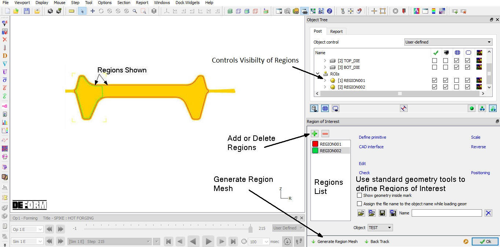
Region of interest definition for 2D
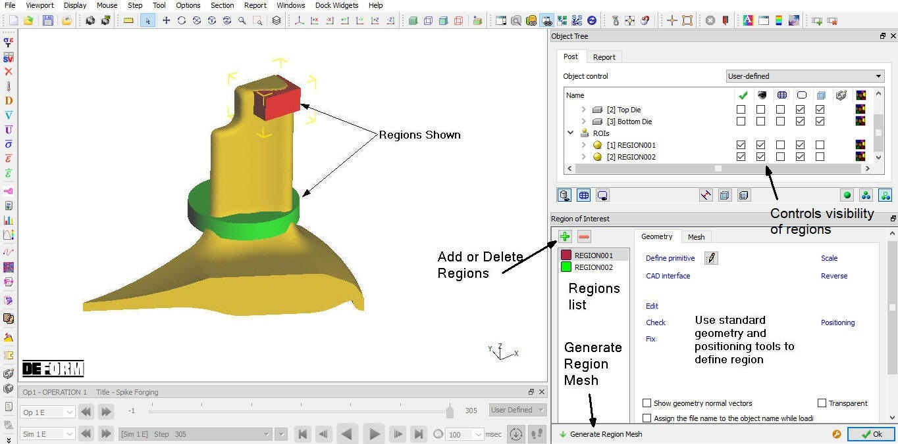
Region of interest definition for 3D
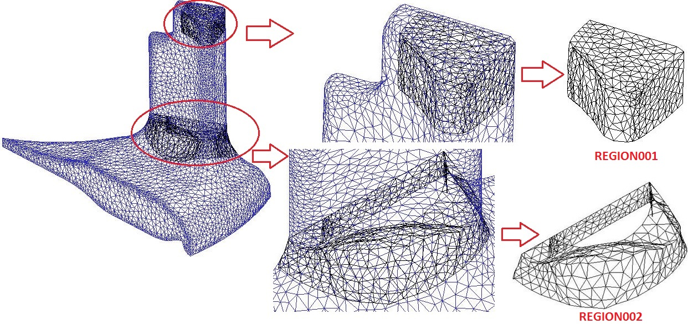
3D regions of interest wireframe view
Defined geometry can be positioned using positioning option as shown in Fig. 26.6.5.4.
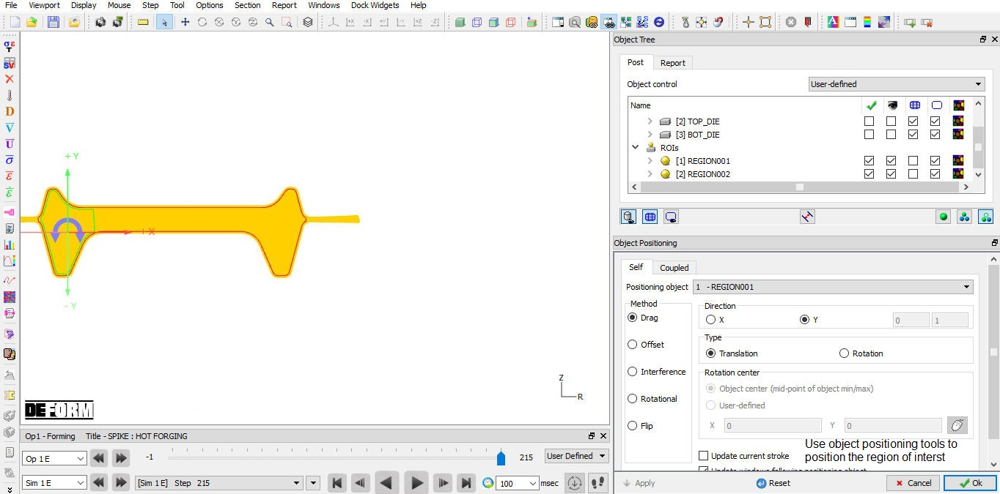
Region of interest positioning
After defining the geometry for the regions of interest, select the regions and click on button to generate mesh for the regions. For 3D model, mesh settings can be varied for each region from the Mesh tab as shown in Fig. 26.6.5.5.
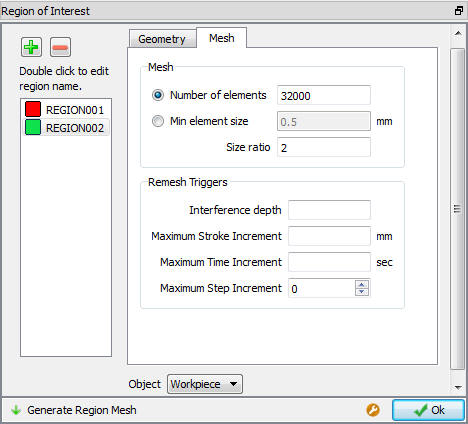
3D model region of interest mesh settings window
User can plot the state variable for the object with regions and control visibility of the regions using the object tree options. This displays the contour plot for the specific regions. Examples of contour plots for the 2D Rib web example is shown in Fig. 26.6.5.6. and for 3D gear carrier example is shown in Fig. 26.6.5.7.
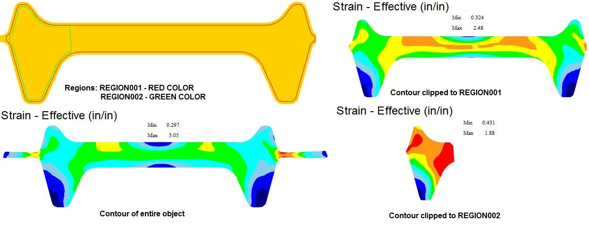
2D Rib web example with region of interest effective strain contours
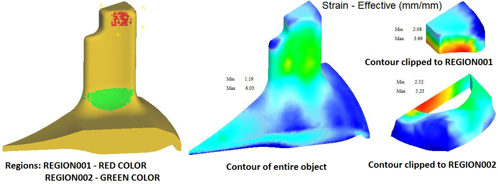
3D Gear carrier example with region of interest effective strain contours
(2D): Back tracking option is now available for 2D objects as region of interest to track the region back in Billet after forming process. We can also plot state variables within the back-tracked ROI shape.
User needs to add ROI and define its geometry after which Back Track option will become active. Now click on Back Track button so that system starts calculating to back track region. Once backtracking is completed user can notice that only the
ROI selected for backtracking is displayed (See Fig. 26.6.5.8.).
Use play Backward button and observe the region back tracking into billet. We can also plot state variable and observe the state variable distribution in Back Track region.
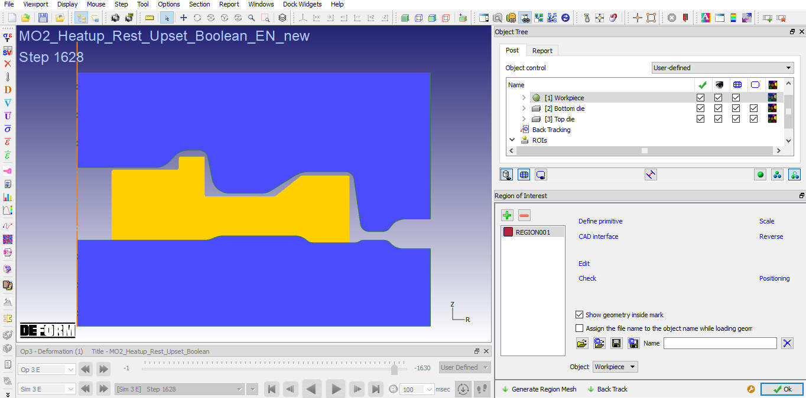
After generating Back Track
Import MO2_Heatup_Rest_Upset_Boolean_EN_new.DB from installation 2D/LABS folder in NG post and go to Last step (see Fig. 26.6.5.9.),
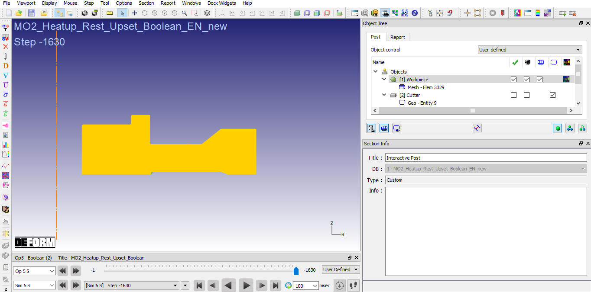
Loaded Database at Last step
In File Menu select Export option and save the keyfile as " MachinedShape.KEY" (See Fig. 26.6.5.10.).
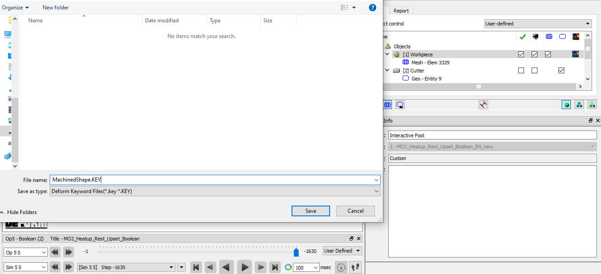
Saving Object file using Export option
Now load Step 1628 (End step of Operation 3)
Open Region Of Interest, Click on  button to Add a new ROI and Click on
button to Add a new ROI and Click on  , Choose “MachinedShape.KEY”
file and Select Workpiece object in Object Selection page (See Fig. 26.6.5.11.
, Choose “MachinedShape.KEY”
file and Select Workpiece object in Object Selection page (See Fig. 26.6.5.11.
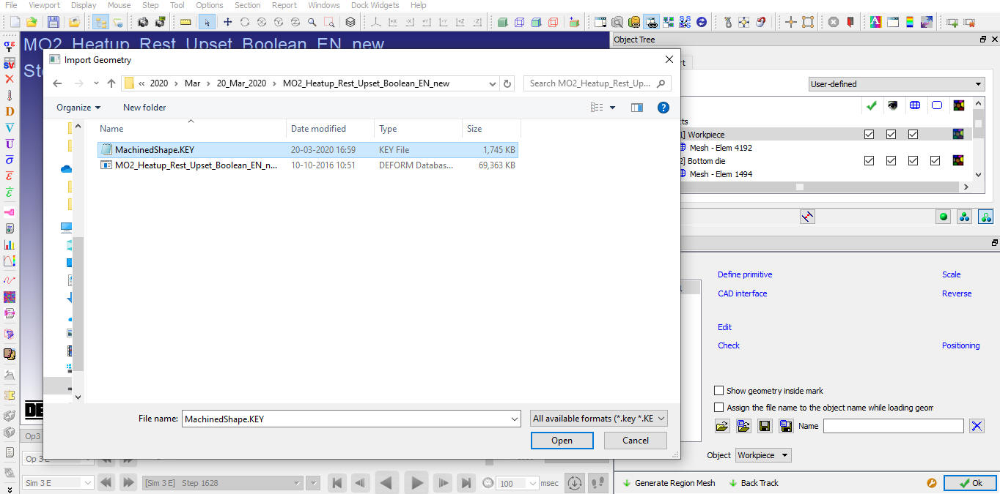
Open saved Keyfile in Region of Interest Page
Click on , after generating Mesh then option is activated and generated region of Mesh is highlighted in Red color (See Fig. 26.6.5.12.)
.
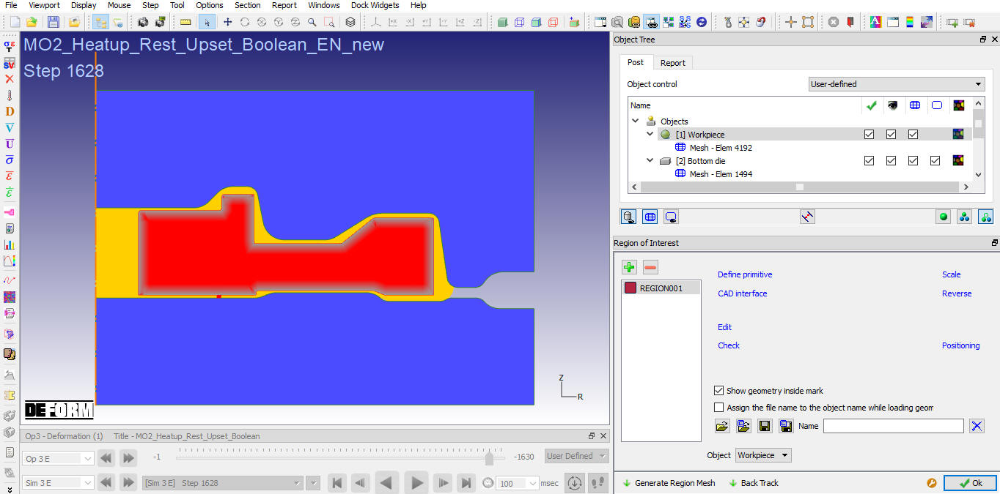
After Generating Region of Interest Mesh
Now Click on . After back track calculations are completed, region selected for back tracking will be displayed as shown in Fig. 26.6.5.13.
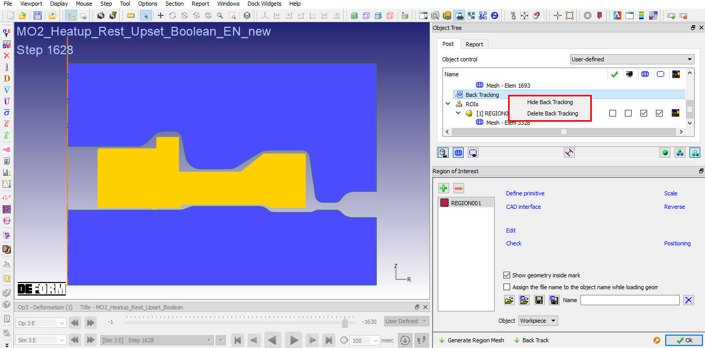
Back tracking option added in Object tree list and its RMB options
Now Close ROI and play Backward animation an observe the display Region (See Fig. 26.6.5.14.)
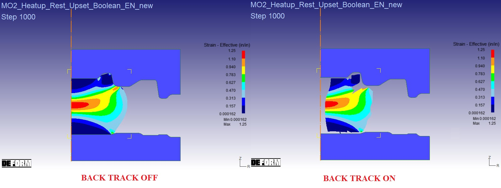
Back Track Region display
Object display with Back Track Off and Back Track On options (See Fig. 26.6.5.15.)
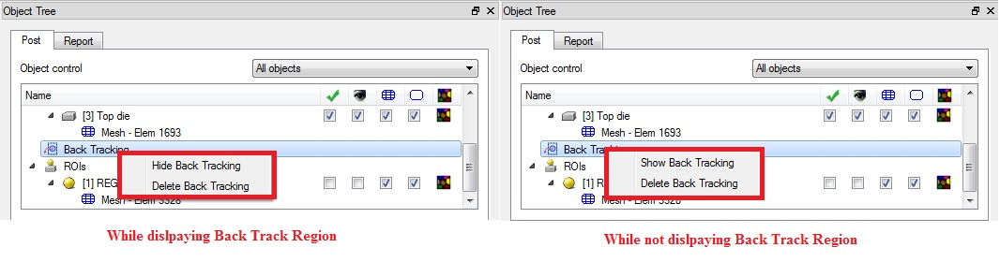
Back Track RMB options in Object Tree